Le protocole CARP (Common Address Redundancy Protocol) permet à plusieurs équipements réseau de partager une même adresse IP. C'est une alternative libre au protocole HSRP. Les machines partageant cette IP forment un groupe de redondance, avec un équipement « maître » et un ou plusieurs « esclaves » destinés à prendre le relai en cas de défaillance du premier.
Ici, CARP est utilisé pour créer un routeur / pare-feu redondant : les clients prennent l'IP virtuelle comme passerelle par défaut. En cas de panne du routeur principal, le second répond aux requêtes des clients en toute transparence, sans coupure. Le protocole pfsync gère quant à lui la synchronisation de configuration entre les deux pare-feu.
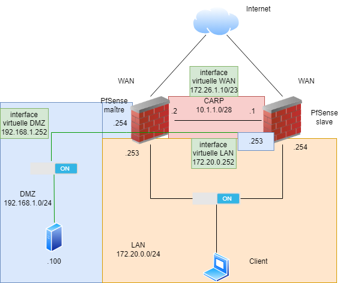
| Périphérique | Réseau | Interface | Adresse IP | Masque | Passerelle |
|---|---|---|---|---|---|
| Pare-feu maître | WAN | hn0 | DHCP | 255.255.252.0 | 172.26.1.254 |
| CARP (pfsync) | hn2 | 10.1.1.2 | 255.255.255.240 | 172.26.1.254 | |
| LAN | hn1 | 172.20.0.253 | 255.255.255.0 | 172.26.1.254 | |
| DMZ | hn3 | 192.168.1.254 | 255.255.255.0 | 172.26.1.254 | |
| Pare-feu esclave | WAN | hn0 | DHCP | 255.255.252.0 | 172.26.1.254 |
| CARP (pfsync) | hn2 | 10.1.1.1 | 255.255.255.240 | 172.26.1.254 | |
| LAN | hn1 | 172.20.0.254 | 255.255.255.0 | 172.26.1.254 | |
| DMZ | hn3 | 192.168.1.253 | 255.255.255.0 | 172.26.1.254 | |
| Virtuelle (LAN) | — | 172.20.0.252 | 255.255.255.0 | 172.26.1.254 | |
| Virtuelle (WAN) | — | 172.26.1.10 | 255.255.252.0 | 172.26.1.254 | |
| Virtuelle (DMZ) | — | 192.168.1.252 | 255.255.255.0 | 172.26.1.254 | |
| Client | LAN | Ethernet | 172.20.0.1 | 255.255.255.0 | 172.20.0.252 |
| Serveur web | DMZ | eth0 | 192.168.1.100 | 255.255.255.0 | 192.168.1.252 |
Pour plus de lisibilité, renommer la 3ème interface reliant les deux pare-feu (celle qui va porter CARP et pfsync) dans Interfaces :
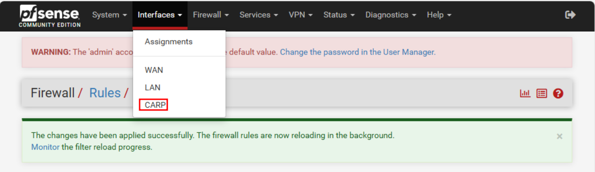
Créer une règle autorisant tout le trafic entre les deux pare-feu, dans Firewall → Rules → CARP (règle ouverte pour simplifier la configuration et les accès) :
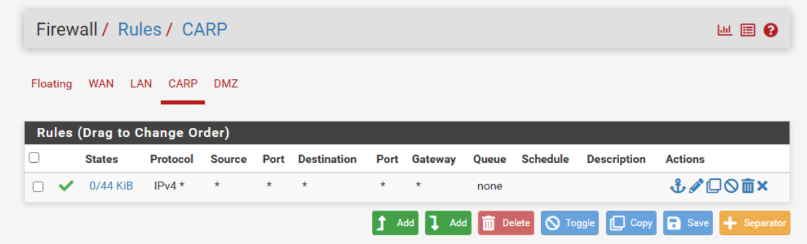
Dans System → High Availability → Sync, activer pfsync sur l'interface CARP et renseigner l'IP du pare-feu esclave dans les sections pfsync et XMLRPC Sync :
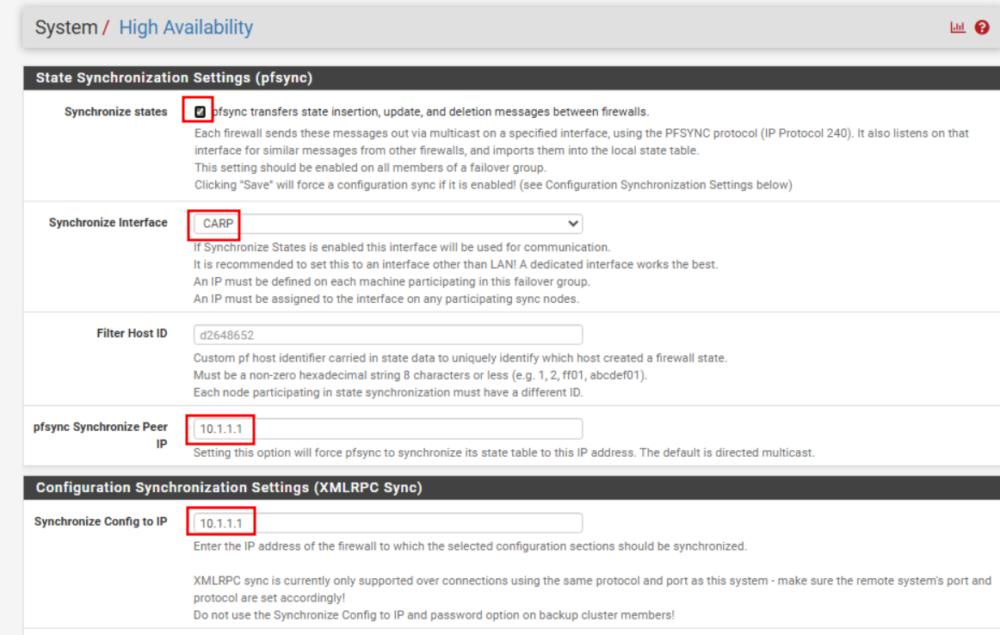
Renseigner ensuite le nom d'utilisateur et le mot de passe du pare-feu esclave, puis cocher toutes les cases pour synchroniser l'ensemble des fonctionnalités :
username : admin password : pfsense
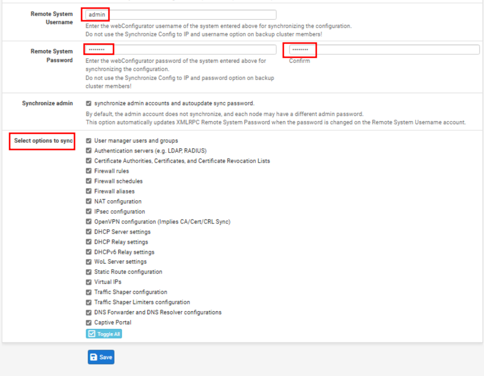
Ne configurer que la partie pfsync en renseignant l'adresse IP du pare-feu maître, sans toucher aux autres paramètres :
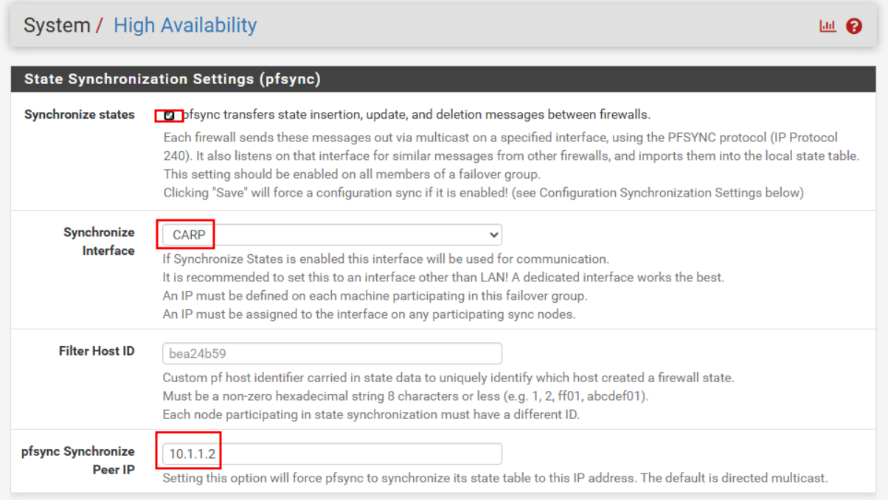
Cette IP virtuelle servira de passerelle par défaut pour le client du réseau LAN. Se rendre dans Firewall → Virtual IPs et ajouter une interface :
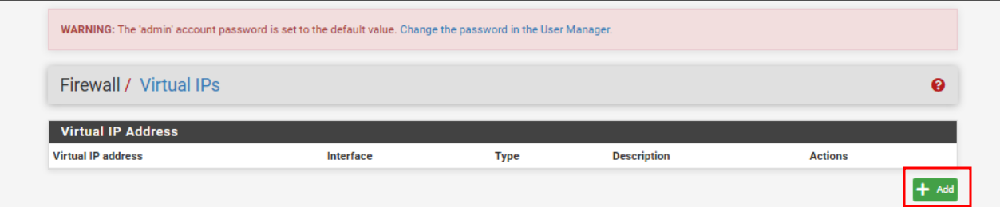
La configuration doit ressembler à ceci :
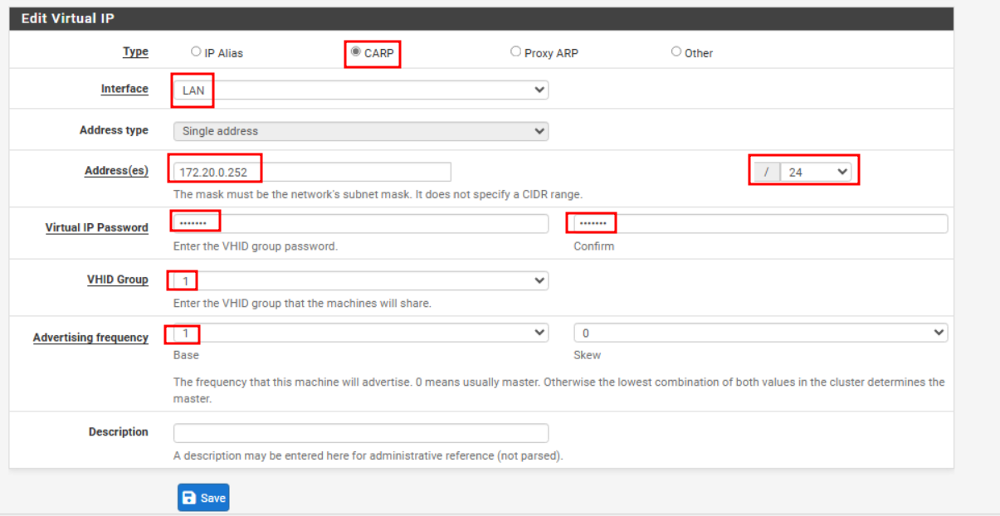
L'interface créée doit apparaître dans le menu :
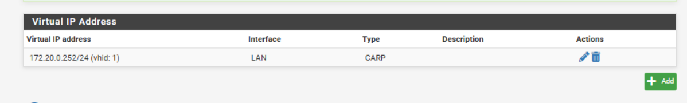
La configuration Hyper-V ne permet pas nativement de ping l'interface virtuelle créée : il faut activer l'usurpation d'adresse MAC sur la carte réseau LAN de la VM :
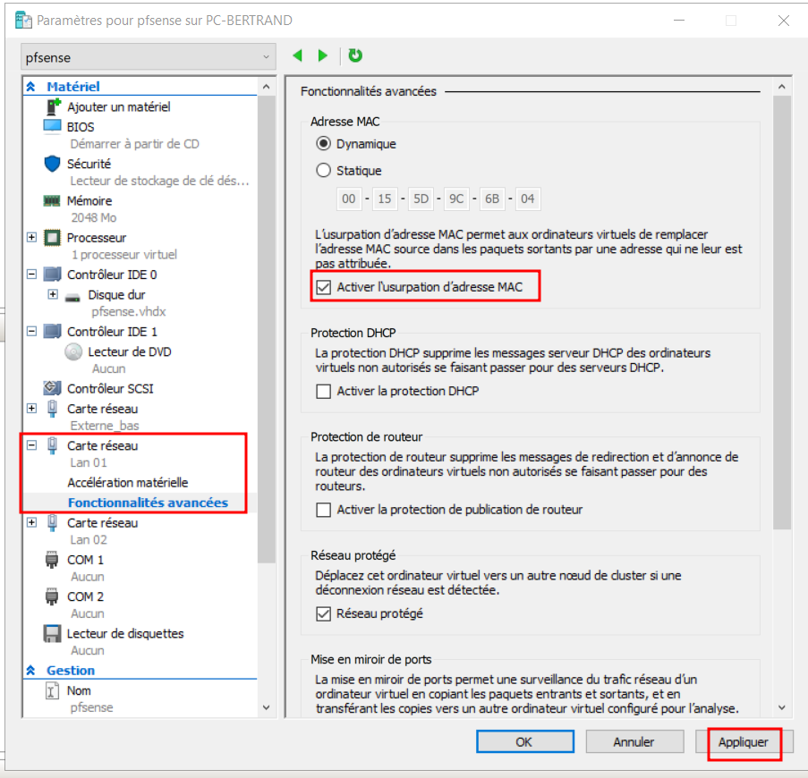
Se rendre dans Status → CARP (failover). Pour le pare-feu maître, le statut doit être « MASTER » :
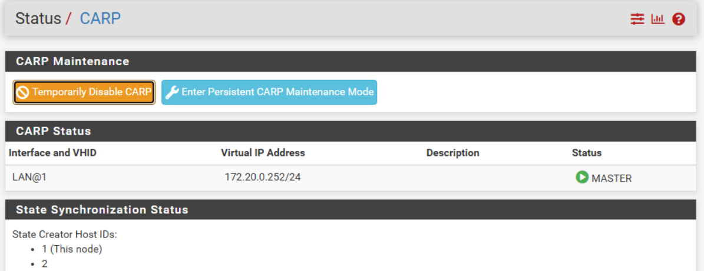
Pour le pare-feu esclave, le statut doit être « BACKUP » :
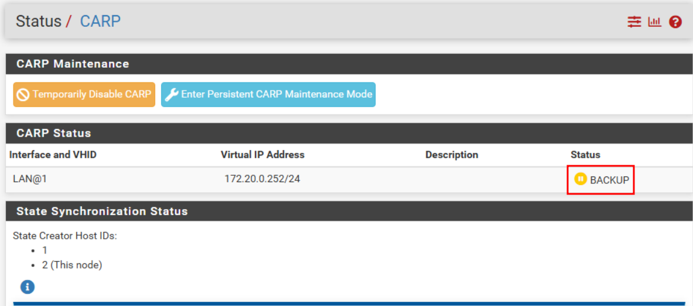
En plus de la redondance interne, on fournit la haute disponibilité sur le lien externe pour maintenir la connectivité Internet des clients. Créer une interface virtuelle sur l'interface WAN, comme précédemment pour le LAN :
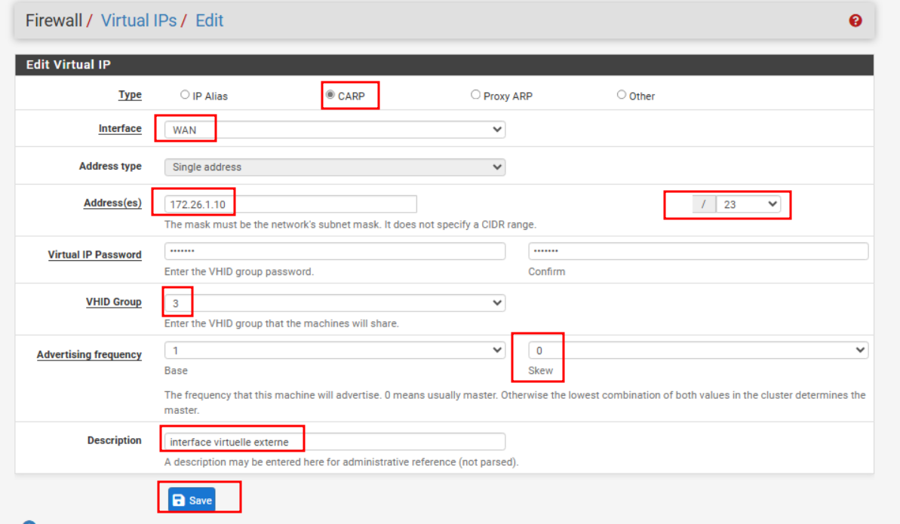
Une adresse IP externe de l'environnement pédagogique est renseignée sur cette interface virtuelle.
Dans Firewall → NAT → Outbound, sélectionner le mode manuel puis ne laisser que les adresses du réseau interne, car seul ce réseau doit être translaté :
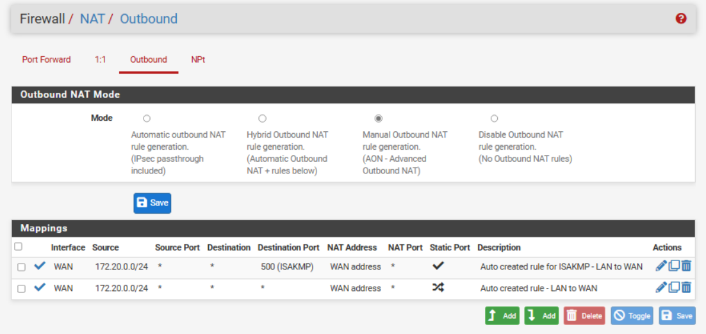
Créer une règle de redirection de port pour accéder au futur serveur web du LAN, dans Firewall → Rules → Port Forwarding. Le protocole TCP est autorisé depuis l'extérieur vers le serveur web, avec pour destination l'interface virtuelle WAN créée à l'étape précédente :
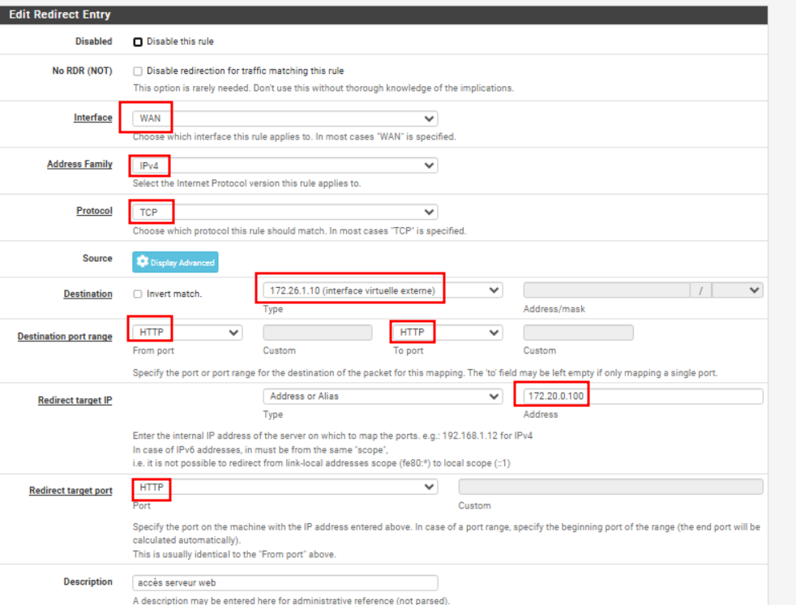
Le serveur web est ensuite déplacé dans un nouveau réseau DMZ : une interface interne supplémentaire est ajoutée sur les deux pare-feu (4 interfaces physiques et 3 interfaces virtuelles au total). Créer l'interface virtuelle DMZ de la même façon que pour le LAN et le WAN :
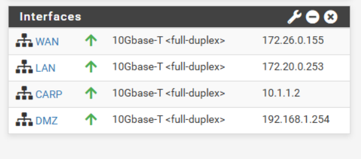
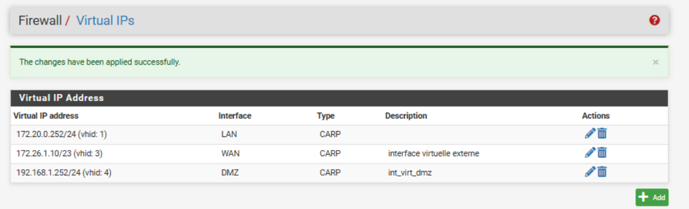
Depuis le client du LAN, effectuer un tracert 8.8.8.8 avec le pare-feu maître allumé, puis en l'éteignant :
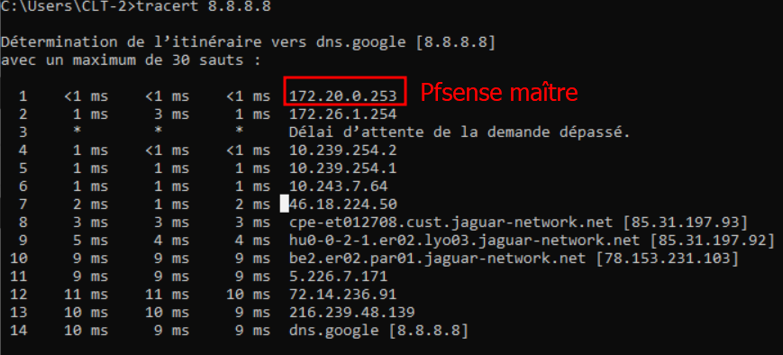
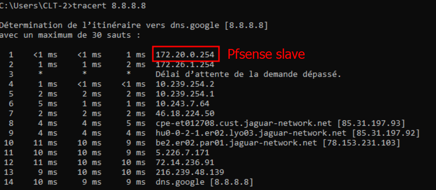
Depuis la machine physique, accès au serveur web via l'adresse virtuelle externe 172.26.1.10 :
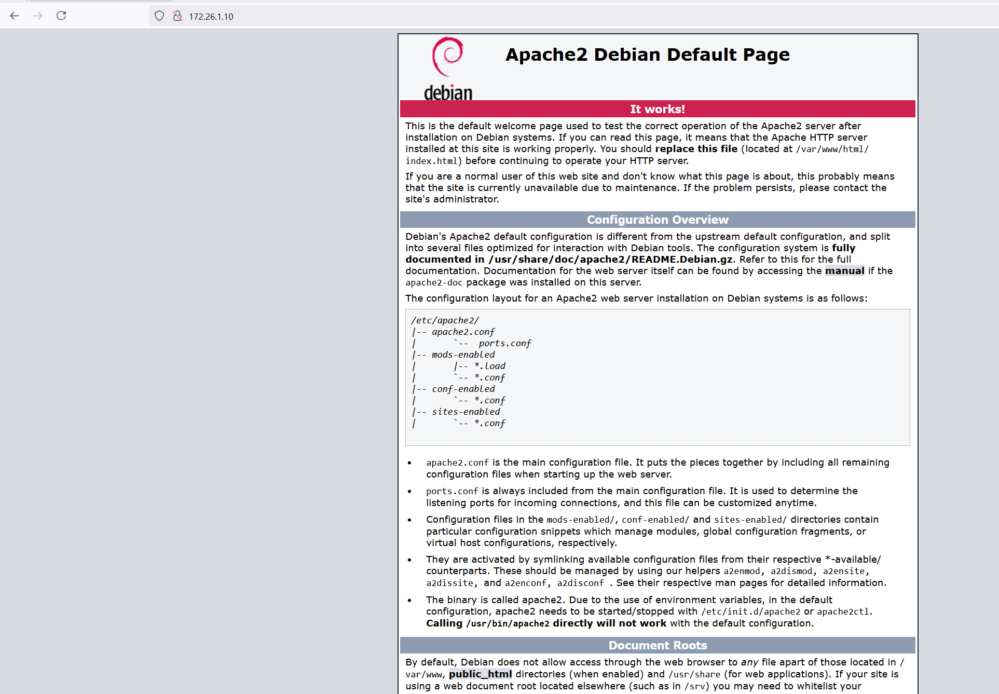
Avec tcpdump, on confirme que la redirection fonctionne toujours lorsque le maître est éteint : l'adresse IP qui apparaît est celle du pare-feu esclave.
# Installer tcpdump sudo apt-get install tcpdump -y # Lancer la capture sur l'interface eth0 du serveur tcpdump -i eth0
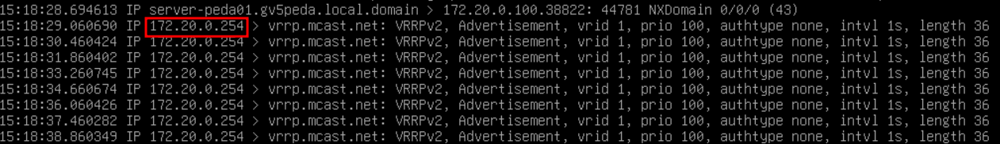
Le serveur reste accessible depuis l'extérieur avec les deux pare-feu allumés :
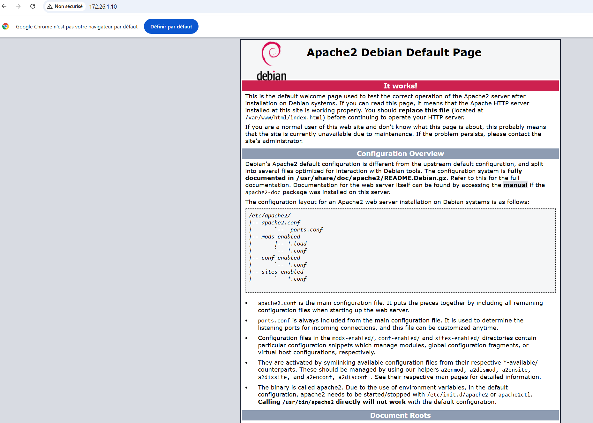
tcpdump permet de voir par quel pare-feu transitent les paquets :
tcpdump -i eth0
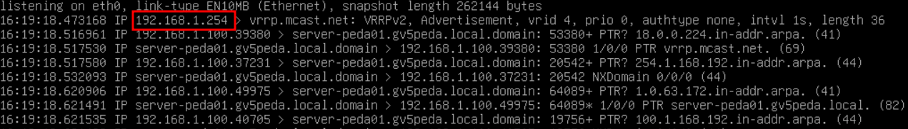
Après coupure du pare-feu maître, analyse des paquets sur le serveur web :
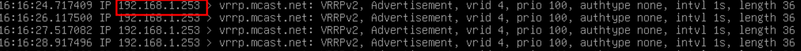